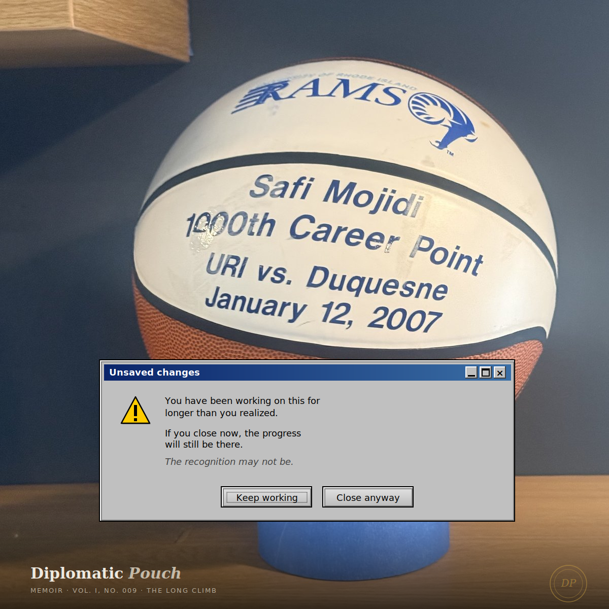

The Long Climb
On building something for thirty years before anyone notices.

The University of Rhode Island women's basketball team won the Atlantic 10 championship in March of this year. It was the first conference championship in the program's fifty-one-year history. The team beat George Mason 53-51 on a Sunday afternoon in Virginia, punched their NCAA tournament ticket for the first time in thirty years, and then watched their selection live on ESPN under the neon-blue lights of the Soloviev Practice Facility in South Kingstown, surrounded by two hundred alumni and donors and fans who had been waiting, in some cases, since 1975 to see what they were watching.
I was not in that room. I was watching it on my laptop in a different state, in a renovation-progress home office, on a Sunday afternoon that I had cleared specifically to watch the selection show because I had known for two weeks that this was likely to be the moment. I am forty years old. I played for that program from 2004 to 2008. My senior season we finished 13-18 and lost in the conference tournament quarterfinals to George Washington 70-43. That season was, depending on which press cycle you read at the time, either the year the program was finally building or the year the program was definitively stuck. From the inside, it felt like both. From the outside, it mostly went unobserved.
What I want to write about, in this memoir, is what the long climb actually looked like from the inside. Not because I am claiming a share of the credit for what the program has become. The team that won the championship in 2026 is a different team from the team I played for in 2008. Most of the players I played with would not recognize half of what the current program does. The coach is different. The facility is different. The conference is different. The NIL economics are different. The women's basketball landscape is unrecognizable.
What is the same is the building. The 2026 championship was built on top of every season that did not win a championship, and the 2008 season that finished 13-18 was one of those seasons. I want to write about what that work looked like, because almost every cybersecurity practice I now do for clients was learned during those four years, and almost none of the lessons would have been visible to me if the program had been winning at the time.
The numbers, briefly
I played four years at URI under a head coach who is not the head coach today. I graduated in 2008 with the school record for three-pointers made, with 185. The record still stands eighteen years later — I checked, before sitting down to write this. I finished third on the all-time assists list with 354. Fourth on the all-time scoring list with 1,601 points. I was inducted into the Bullis School Athletic Hall of Fame for the work I did before college; I have not been inducted into URI's, and I do not expect to be, because URI's Hall of Fame is properly reserved for players whose careers shaped the program's trajectory rather than for players whose careers were part of the long flat stretch before the trajectory began to bend.
I list the numbers because I do not believe in claims that cannot be verified, and because the rest of this memoir will be about things that are harder to measure, and I want you to know that the harder claims are made by someone who knew how to make a shot at the Division I level. The numbers are not the story. They are the credentials that let me tell the story.
What the building looked like
The URI program when I joined it was, by every metric I could see, a basement program in a middle conference. The Atlantic 10 had a few national contenders and many programs like ours. We were the program that the contenders scheduled when they needed a likely win on the home schedule. We were the program whose practice gym was shared with other sports. We were the program whose travel budget required overnight bus rides for games that should have been flights. We were the program whose recruiting class each year contained players who had been the best in their high school region and who, almost without exception, had been recruited by us because the programs they actually wanted to play for had filled their scholarships first.
The work, on the inside, was almost entirely about absorption. Could the program absorb the next recruiting class without losing the relational coherence the current team had built? Could the program absorb the next losing streak without losing the buy-in of the players who had been there for the previous losing streak? Could the program absorb the next staff change — assistant coaches left often, recruited by programs further up the ladder — without losing the institutional memory the assistant had been carrying? Could the program absorb a season like 13-18 and emerge with the players still believing that they were building toward something?
Absorption capacity. The same word my mother used in Sierra Leone for what determined whether a country could convert international funding into outcomes that would still be there in five years. I did not know I was learning absorption capacity. I thought I was learning basketball.
What I now understand is that absorption capacity is what builds careers, what builds programs, what builds security practices, what builds anything that has to keep functioning across personnel changes and resource fluctuations and external pressure. The team that wins the championship in year fifty-one is not the team that played in year eight. The team that wins the championship is the team that absorbed what the team in year eight had built, and what the team in year fifteen had built, and what the team in year twenty-eight had built, well enough that none of that work was lost when the staff changed and the players graduated and the conference realigned. Absorption capacity is the relational and institutional infrastructure that lets a long climb actually accumulate, instead of resetting every few years.
What the 13-18 season actually was
The 2007-08 season finished 13-18. That is not a successful season by any external measurement. We did not make the NCAA tournament. We did not win our conference. We lost in the quarterfinals of the A-10 tournament to a higher-seeded George Washington team. The box score from that quarterfinal loss is still searchable; you can read it if you want to. I am not going to summarize it here because the box score is not the story either.
The story, on the inside, was that we had won seven more games than the previous year. The previous year had been a 6-22 season. The 13-18 season was, in the math the program could see and the press releases never named, a 117% improvement in win count. From the outside, that was a losing season. From the inside, that was the inflection. The freshmen who had taken their lumps the previous year were now sophomores who knew the system. The transfer who had arrived in the spring was now integrated. The new assistant coach had finished her first full recruiting cycle. The program was building in a way that the win-loss column could not yet show.
I do not want to oversell this. The program did not, after my graduation, immediately ascend. The years that followed were uneven. The conference championship did not arrive in 2009 or 2012 or 2018. It arrived in 2026. Eighteen years after the 13-18 season I am calling an inflection. From the perspective of the win-loss column, calling 13-18 an inflection looks delusional. From the perspective of the program building, eighteen years later, the players who played in 13-18 are part of the lineage of players whose absorption capacity made the 2026 championship possible. I do not know how to prove this in any way the win-loss column would respect. I also do not know how else to read the data.
What I want to say plainly is that the work I did at URI was not visibly good work by the metrics anyone outside the program could see at the time. It was the inflection work. It was building work. The credit for it now goes to the team that won the championship in 2026, and that credit is correctly placed. The work that made the credit possible was distributed across fifty-one years of players who never won a championship, and I was a small part of that distribution.
The throughline to cybersecurity practice
Almost every security program I am hired to advise is in some version of what URI was in 2008. The program is doing real work that the existing metrics do not measure. The board does not understand why the security investment is not visibly reducing risk in a quarter, because the work of the quarter is building absorption capacity that will pay out in year three or year five. The CISO is exhausted from defending the program against the appearance of its own slow progress. The team is starting to lose buy-in because the wins are not visible. The cycle, if it is not interrupted, ends with a CISO transition that resets all the relational work that had been accumulating, after which the program returns to the basement and starts the long climb again.
My job, in those engagements, is to be the person who can name what the program is actually doing. Not to the team — the team already knows. To the board. To the CFO. To the procurement counterparties who are asking when the SOC 2 will be clean. The work of building a security program that can absorb the next breach, the next staff change, the next regulatory shift — that work does not look like security work to anyone who has only seen security work measured by compliance dashboards. It looks like slow institutional building. It is slow institutional building. The slowness is the point.
I learned this at URI. I did not learn it in any class I took at Marymount. The doctoral work gave me the vocabulary. The athletic career gave me the lived sense of what building something carefully over years actually feels like from the inside, and how often the inside view is different from anything the outside metrics can see, and how necessary it is to have someone in the room who can hold the inside view long enough to keep the building from being abandoned in favor of the appearance of building.
The 2026 URI championship is the win. The credit goes to the team that won it. Every season that did not win is the lineage. The lineage is not a consolation prize for the seasons that did not win. The lineage is the actual work that made the championship possible. Confusing the credit and the work is one of the most common mistakes I see in security programs. Honoring the lineage while celebrating the credit is one of the hardest things to do well at the board level. It is also the thing that determines whether the program that won will be able to keep winning, or whether the championship will turn out to have been the peak of a cycle that the program could not absorb.
What I told a former teammate
I called a former teammate the night after the championship game. We had not spoken in some time. She picked up; she had been watching too. We talked for about an hour. Mostly we did not talk about the game. We talked about the players we had played with who were not on the championship roster, who had not been on any championship roster, whose careers had ended without a single conference banner. We named them. There were a lot of them. We talked about who was still in basketball in some form, who had gone to law school, who had gone to grad school, who had gone into business, who had become teachers, who had become parents, who had become whatever they became.
What I noticed, in that conversation, was that almost none of us defined our basketball careers by the win-loss column. We defined them by the relationships we had built, by the work we had done, by the people we had become because we had spent four years pushing each other across a court in front of crowds that, most nights, were not very large. The program had given us something the win-loss column could not measure. The program had not won. We had still been part of something. The two things were not in conflict. They were the same building, observed from inside and from outside.
The 2026 championship is the building observed from the outside. It is the win. It is the credit. It is the headline. The fifty years before the championship are the building observed from the inside. They are the work. They are the absorption capacity. They are the lineage. The pouch I carry now, the one that says Diplomatic Pouch on its seal, was learned in part on the long bus rides between Kingston and wherever we were playing on a Tuesday night in February. The discipline is the same. The work is the same. The body is the same. The desk and the court were never two different rooms.
I am writing this in the same home office I watched the selection show in. The jersey from 2008 is folded in a drawer in a different room of the house. The numbers I put up are searchable on the program's website. The program is now what it has spent fifty years trying to become. None of these things are in conflict with one another. They are the same lineage, observed at different points in its arc. I am proud to have been part of an arc that I did not know would bend toward this particular Sunday afternoon in March 2026. I would have done the work anyway. The work was its own justification at the time. The credit, if any of it accrues to the long climb in retrospect, is not what the work was for.
The work was for the building. The building is what is now there.
Next dispatch ── To be sealed in August.
— Dr. Safi Mojidi